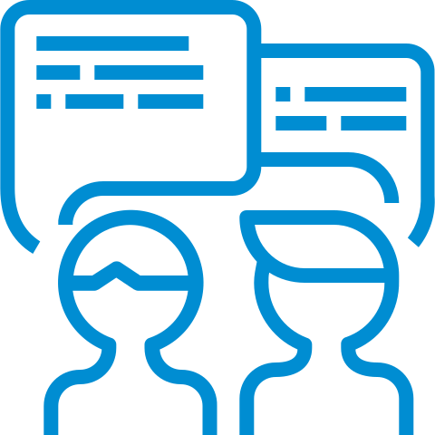
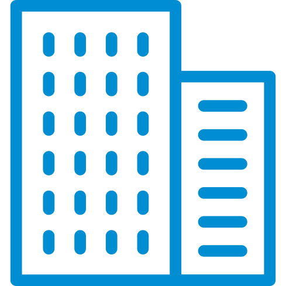
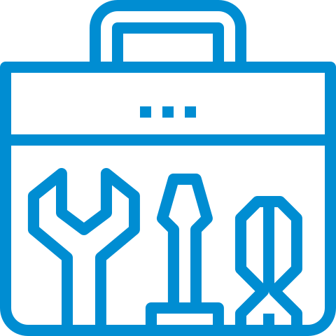

Akademia ProtoLab
Program edukacyjny skierowany do uczniów szkół ponadpodstawowych od
18 roku życia, studentów, absolwentów, młodych naukowców, do 35 roku
życia. Program budowany będzie przy współpracy z uczelniami i
biznesem z regionu. Oferta szkoleniowa ALiI będzie skupiała się na
rozwijaniu kompetencji liderskich, innowacyjności, konceptualizacji
własnych pomysłów, budowaniu relacji biznesowych z miejscowym
przemysłem, umiejętności i kompetencji potrzebnych do pozyskiwania
środków na tworzenie start-upów oraz na prace B+R.

Protostarter
Program bonów konstruktorskich i rezydencji, skierowany jest do
zespołów projektowych. Wybrane zespoły, które otrzymają ww.
otrzymają wsparcie szkoleniowe i dostęp do przestrzeni, który pomoże
im realizować własne pomysły i opracować MVP. Zespoły będą
nawiązywać współpracę i dalej rozwijać swoje projekty poprzez sieć
kontaktów z uczestnikami regionalnych ekosystemów innowacji i
startupów w Polsce.

Hackathony
Poprzez hackathony chcemy zintegrować potencjał studentów i
naukowców skupiony wokół PCI ProtoLab z realnymi potrzebami
przedsiębiorców oraz strategicznymi wyzwaniami głównych gałęzi
przemysłu Podkarpacia, aby tworzyć nowe formy współpracy i szanse
biznesowe.
Szkolenia i warsztaty
Webinary, szkolenia dla szkół i uczelni, uczniów szkół
ponadpodstawowych, studentów, absolwentów, młodych naukowców.
Szkolenia i warsztaty (odbywające się zdalnie lub na żywo)
zwiększające kompetencje w zakresie umiejętności kreatywnego
myślenia, poszukiwania niszowych problemów i metod ich
rozwiązywania, budowania pretotypów i mockupów oraz tworzenia
startupów. Szkolenia prowadzone będą przez specjalistów i trenerów z
PCI, z uczelni, biznesu, z lokalnych i krajowych liderów innowacji,
specjalistów od startupów. Szkolenia i warsztaty realizowane będą w
trzech formatach: na miejscu w Protolabie z wykorzystaniem jego
infrastruktury i zasobów, wyjazdy do szkół ponadpodstawowych i
wyższych w regionie, oraz online.